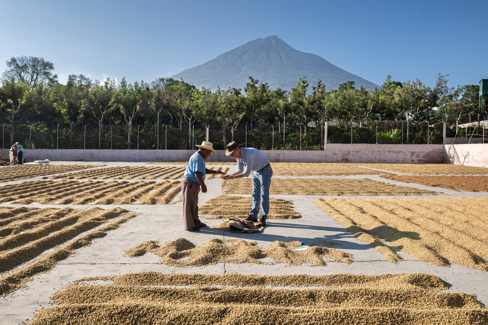
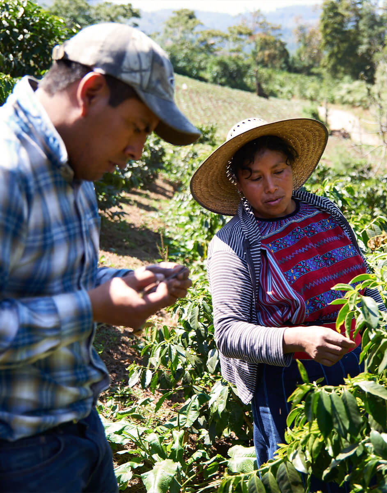
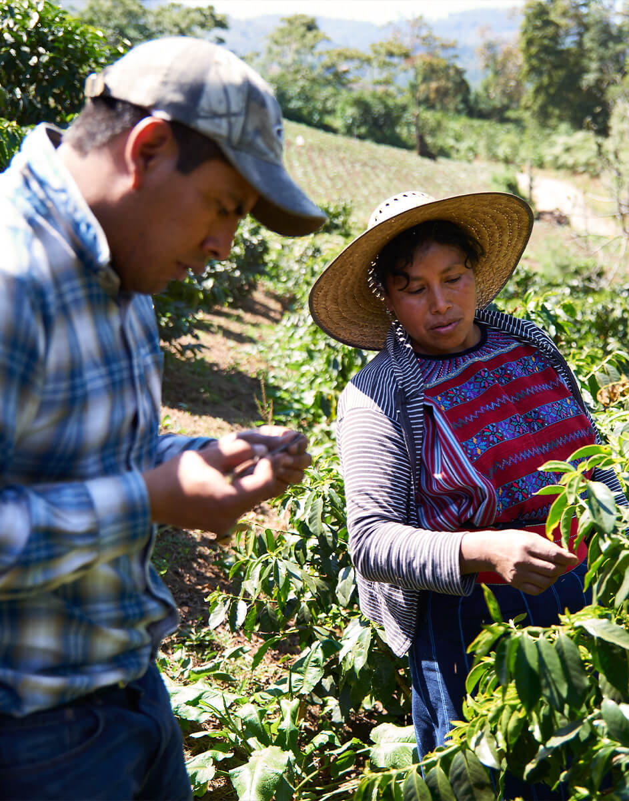
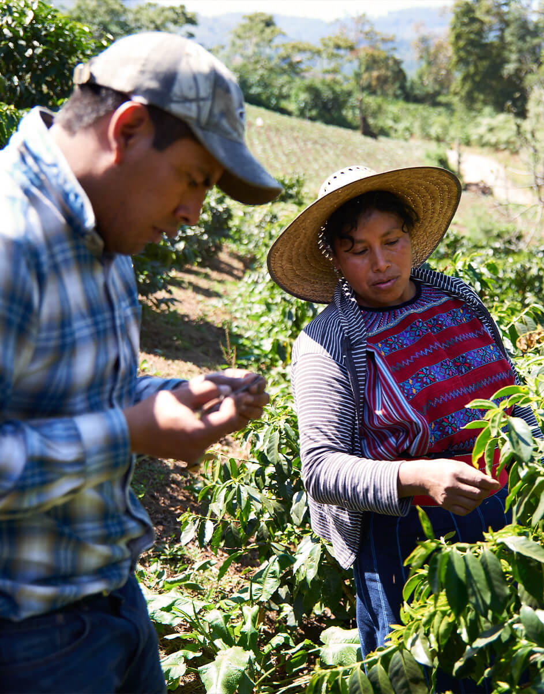

Guatemala
Coffee production in Guatemala began to develop in the 1850s. Coffee is an important element of Guatemala's economy.
Guatemala's coffee beans commonly exhibit tasting notes that suggest a full-bodied profile with a pronounced chocolate-cocoa flavor and a sweetness reminiscent of toffee. These coffees from Guatemala truly represent the distinctive characteristics found in Central American coffees.
Specifically, the green coffees produced in the Atitlan and Antigua coffee growing regions in Guatemala's central highlands, known as Strictly Hard Bean, showcase these qualities, along with a floral acidity that often carries spicy or chocolaty undertones.

 

